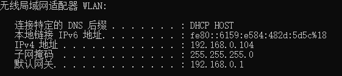
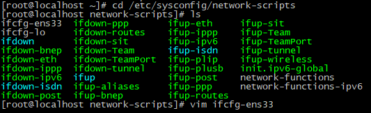
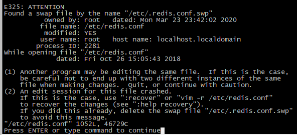
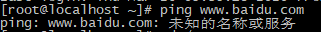

Redis安装记录
记录一下Redis安装过程：
选择一个Redis 稳定版本下载
Redis Desktop Manager 作为管理工具
虚拟机CentOS 7.7设置静态ip
1.使用ipconfig查看并记录本机的ip、子网掩码和网关。

2.进入虚拟机网卡目录
1
cd /etc/sysconfig/network-scripts/&&ls

3.编辑网卡的配置文件 1
vi ifcfg-ens33
4.具体增添的配置内容如下，BOOTPROTO修改为静态ip，并添加ip，子网掩码和网关。
1
2
3
4BOOTPROTO="static"
IPADDR=192.168.0.105
NETMASK=255.255.255.0
GATEWAY=192.168.0.1
5.保存修改并使重启网络服务 1
systemctl restart network.service
验证接口是否配置正确： 1
ip add
也可以ping一下本机或者任意网站进行测试
编译安装Redis2.8.17
1.安装wget 1
yum install wget
使用wget下载，并在\usr\local 目录下载redis并解压
1
2
3cd /usr/local
wget http://download.redis.io/releases/redis-2.8.17.tar.gz
tar xzf redis-2.8.17.tar.gz
2.安装gcc 1
yum install gcc-c++
3.在redis目录下进行make操作
src目录下，会生成编译后的redis服务程序redis-server和用于测试的客户端程序redis-cli
1
2cd redis-2.8.17
make
4.启动redis服务 1
2cd src
./redis-server
5.使用测试客户端程序redis-cli和redis服务交互
启动客户端之后可以执行PING命令来检测服务是否启动。
在redis-cli 后面加上
--raw即redis-cli --raw可以有效避免中文乱码。
1 | |
6.查看运行状态并关闭进程 1
2ps -ef|grep redis
kill 9 pid
7.开启守护进程（Daemon Process），是 Linux 中的后台服务进程。它脱离终端，为了避免进程被任何终端所产生的信息所打断，其在执行过程中的信息也不在任何终端上显示。
1 | |
编译安装Redis主从配置
例：现在有两个虚拟机：ip分别为192.168.0.105（主机）和192.168.0.103（从机）
从节点配置 1
2cd /usr/local/redis-2.8.17
vi redis.conf
修改daemonize no为daemonize yes 修改bind127.0.0.1为192.168.0.105
主节点配置 1
2cd /usr/local/redis-2.8.17
vi redis.conf
修改daemonize no 为 daemonize yes ，即开启守护进程。
修改# slaveof
修改# repl-ping-slave-period 10，取消注释，设置为 repl-ping-slave-period 10
两台机器全部启动redis服务
1
2
3cd /usr/local/redis-2.8.17/src
./redis-server ../redis.conf
ps -ef|grep redis # 查看进程
启动redis客户端
主机启动，因为已经绑定了ip，所以要指定主机使用参数h
1
./redis-cli -h 192.168.0.105
从机启动 1
./redis-cli
确认连接情况，观察是否role已经正确设置为master/slave
1 | |
设置成功后进行存储测试
主机：存入数据1
1 | |
从机：取出成功，得到1
1 | |
yum安装Redis并设置主从同步
1.安装并自动下载3.2.12-2版本
1
2yum install epel-release
yum install redis
2.修改配置文件
1
2vi /etc/redis.conf
修改内容同上tar
3.启动redis服务
1
redis-server /etc/redis.conf
4.启动客户端
1
2主：redis-cli -h 192.168.0.105
从：redis-cli
5.确认情况
1
INFO replication
6.同步测试
一些问题
产生swap文件
vi命令操作配置文件的时候： 中途意外退出，会产生临时文件【.配置文件名.swp】
再次使用，可以直接【rm -f .配置文件名.swp】，然后正常编辑。
例：rm -f /etc/.redis.conf.swp ，直接删除或者进行覆盖。

版本不一致
不同版本的Redis不要搭建主从，以免发生问题。比如通过yum安装的版本和编译下载的版本就不一致，配置主从同步需要版本一致！最好不要同时使用两种方法安装，以免混淆！
卸载文件不彻底
问题：执行了yum remove redis命令。此时，redis.conf
被vi等打开，删除的时候会出现警告： 警告：/etc/redis.conf 已另存为
/etc/redis.conf.rpmsave 。此时，保留了
/etc/redis.conf.rpmsave文件，再次yum install
redis的时候，/etc/redis.conf会被创建为一个新的空文件，导致问题出现。
解决方法： 删除/etc/redis.conf.rpmsave等文件
配置静态ip后无法ping通外部网络
1.未知的名称或服务  一般是域名解析没有成功，在配置文件中设置DNS服务器，默认与网关ip相同。
1 | |
重新加载配置文件并启动网络即可。
2.启动网卡报错 Failed to start LSB: Bring up/down networking
禁用NetworkManager 1
2systemctl stop NetworkManager
systemctl disable NetworkManager